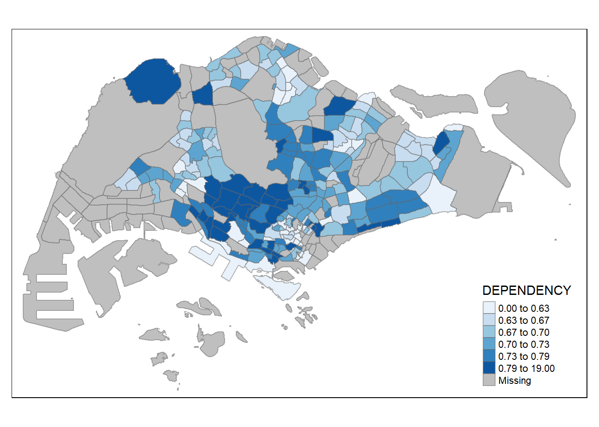

pacman::p_load(sf, tmap, tidyverse)Hands-on Exercise 1.2
Overview
This exercise covers the following:
Getting Started
Install and load the necessary packages
Reading in Geospatial Data
Reading in MP14_SUBZONE_WEB_PL shapefile.
mpsz <- st_read(dsn = 'data/geospatial',
layer = 'MP14_SUBZONE_WEB_PL')Reading layer `MP14_SUBZONE_WEB_PL' from data source
`C:\Users\fongb\Desktop\MITB\ISSS624 - Applied Geospatial Analytics\quarto\fongbx\ISSS624\hands-on_exercises\hands-on_ex1\data\geospatial'
using driver `ESRI Shapefile'
Simple feature collection with 323 features and 15 fields
Geometry type: MULTIPOLYGON
Dimension: XY
Bounding box: xmin: 2667.538 ymin: 15748.72 xmax: 56396.44 ymax: 50256.33
Projected CRS: SVY21Examine content of mpsz using the code chunk below
mpszSimple feature collection with 323 features and 15 fields
Geometry type: MULTIPOLYGON
Dimension: XY
Bounding box: xmin: 2667.538 ymin: 15748.72 xmax: 56396.44 ymax: 50256.33
Projected CRS: SVY21
First 10 features:
OBJECTID SUBZONE_NO SUBZONE_N SUBZONE_C CA_IND PLN_AREA_N
1 1 1 MARINA SOUTH MSSZ01 Y MARINA SOUTH
2 2 1 PEARL'S HILL OTSZ01 Y OUTRAM
3 3 3 BOAT QUAY SRSZ03 Y SINGAPORE RIVER
4 4 8 HENDERSON HILL BMSZ08 N BUKIT MERAH
5 5 3 REDHILL BMSZ03 N BUKIT MERAH
6 6 7 ALEXANDRA HILL BMSZ07 N BUKIT MERAH
7 7 9 BUKIT HO SWEE BMSZ09 N BUKIT MERAH
8 8 2 CLARKE QUAY SRSZ02 Y SINGAPORE RIVER
9 9 13 PASIR PANJANG 1 QTSZ13 N QUEENSTOWN
10 10 7 QUEENSWAY QTSZ07 N QUEENSTOWN
PLN_AREA_C REGION_N REGION_C INC_CRC FMEL_UPD_D X_ADDR
1 MS CENTRAL REGION CR 5ED7EB253F99252E 2014-12-05 31595.84
2 OT CENTRAL REGION CR 8C7149B9EB32EEFC 2014-12-05 28679.06
3 SR CENTRAL REGION CR C35FEFF02B13E0E5 2014-12-05 29654.96
4 BM CENTRAL REGION CR 3775D82C5DDBEFBD 2014-12-05 26782.83
5 BM CENTRAL REGION CR 85D9ABEF0A40678F 2014-12-05 26201.96
6 BM CENTRAL REGION CR 9D286521EF5E3B59 2014-12-05 25358.82
7 BM CENTRAL REGION CR 7839A8577144EFE2 2014-12-05 27680.06
8 SR CENTRAL REGION CR 48661DC0FBA09F7A 2014-12-05 29253.21
9 QT CENTRAL REGION CR 1F721290C421BFAB 2014-12-05 22077.34
10 QT CENTRAL REGION CR 3580D2AFFBEE914C 2014-12-05 24168.31
Y_ADDR SHAPE_Leng SHAPE_Area geometry
1 29220.19 5267.381 1630379.3 MULTIPOLYGON (((31495.56 30...
2 29782.05 3506.107 559816.2 MULTIPOLYGON (((29092.28 30...
3 29974.66 1740.926 160807.5 MULTIPOLYGON (((29932.33 29...
4 29933.77 3313.625 595428.9 MULTIPOLYGON (((27131.28 30...
5 30005.70 2825.594 387429.4 MULTIPOLYGON (((26451.03 30...
6 29991.38 4428.913 1030378.8 MULTIPOLYGON (((25899.7 297...
7 30230.86 3275.312 551732.0 MULTIPOLYGON (((27746.95 30...
8 30222.86 2208.619 290184.7 MULTIPOLYGON (((29351.26 29...
9 29893.78 6571.323 1084792.3 MULTIPOLYGON (((20996.49 30...
10 30104.18 3454.239 631644.3 MULTIPOLYGON (((24472.11 29...Reading in Attribute Data
Reading in Singapore Residents by Planning Area / Subzone, Age Group, Sex and Type of Dwelling, June 2011-2020 in csv format. This is an aspatial data fie. Although it does not contain any coordinates values, but it’s PA and SZ fields can be used as unique identifiers to geocode to MP14_SUBZONE_WEB_PL shapefile.
popdata <- read_csv('data/aspatial/respopagesextod2011to2020.csv')Rows: 984656 Columns: 7
── Column specification ────────────────────────────────────────────────────────
Delimiter: ","
chr (5): PA, SZ, AG, Sex, TOD
dbl (2): Pop, Time
ℹ Use `spec()` to retrieve the full column specification for this data.
ℹ Specify the column types or set `show_col_types = FALSE` to quiet this message.Data Preparation
Examine popdata
head(popdata, n=3)# A tibble: 3 × 7
PA SZ AG Sex TOD Pop Time
<chr> <chr> <chr> <chr> <chr> <dbl> <dbl>
1 Ang Mo Kio Ang Mo Kio Town Centre 0_to_4 Males HDB 1- and 2-Room … 0 2011
2 Ang Mo Kio Ang Mo Kio Town Centre 0_to_4 Males HDB 3-Room Flats 10 2011
3 Ang Mo Kio Ang Mo Kio Town Centre 0_to_4 Males HDB 4-Room Flats 30 2011Wrangling popdata to capture the population by the different age groups
pivot_wider()“widens” data, increasing the number of columns and decreasing the number of rows
popdata2020 <- popdata %>%
filter(Time == 2020) %>%
group_by(PA, SZ, AG) %>%
summarise(POP = sum(Pop)) %>%
ungroup() %>%
pivot_wider(names_from = AG,
values_from = POP)`summarise()` has grouped output by 'PA', 'SZ'. You can override using the
`.groups` argument.popdata2020# A tibble: 332 × 21
PA SZ 0_to_…¹ 10_to…² 15_to…³ 20_to…⁴ 25_to…⁵ 30_to…⁶ 35_to…⁷ 40_to…⁸
<chr> <chr> <dbl> <dbl> <dbl> <dbl> <dbl> <dbl> <dbl> <dbl>
1 Ang Mo… Ang … 170 280 340 270 260 310 330 400
2 Ang Mo… Chen… 1060 1040 1160 1330 1720 2020 2150 2080
3 Ang Mo… Chon… 850 1020 1070 1310 1610 1890 1720 1810
4 Ang Mo… Kebu… 680 960 1010 1170 1410 1420 1440 1630
5 Ang Mo… Semb… 210 400 450 500 500 340 300 370
6 Ang Mo… Shan… 560 640 700 860 970 1030 980 1010
7 Ang Mo… Tago… 200 390 460 590 680 500 330 430
8 Ang Mo… Town… 670 930 830 890 1310 1410 1420 1640
9 Ang Mo… Yio … 0 0 0 0 0 0 0 0
10 Ang Mo… Yio … 160 210 260 300 320 240 250 260
# … with 322 more rows, 11 more variables: `45_to_49` <dbl>, `5_to_9` <dbl>,
# `50_to_54` <dbl>, `55_to_59` <dbl>, `60_to_64` <dbl>, `65_to_69` <dbl>,
# `70_to_74` <dbl>, `75_to_79` <dbl>, `80_to_84` <dbl>, `85_to_89` <dbl>,
# `90_and_over` <dbl>, and abbreviated variable names ¹`0_to_4`, ²`10_to_14`,
# ³`15_to_19`, ⁴`20_to_24`, ⁵`25_to_29`, ⁶`30_to_34`, ⁷`35_to_39`,
# ⁸`40_to_44`Further transformation of data, creating new column based on the following:
YOUNG: age group 0 to 4 until age group 20 to 24,
ECONOMY ACTIVE: age group 25-29 until age group 60-64,
AGED: age group 65 and above,
TOTAL: all age group, and
DEPENDENCY: the ratio between young and aged against economy active group
popdata2020 <- popdata2020 %>%
mutate(YOUNG = rowSums(.[3:6]) + rowSums(.[12])) %>%
mutate(ECONOMY_ACTIVE = rowSums(.[7:11]) + rowSums(.[13:15])) %>%
mutate(AGED = rowSums(.[16:21])) %>%
mutate(TOTAL = rowSums(.[3:21])) %>%
mutate(DEPENDENCY = (YOUNG + AGED)/ECONOMY_ACTIVE) %>%
select(PA, SZ, YOUNG, ECONOMY_ACTIVE, AGED, TOTAL, DEPENDENCY)
popdata2020# A tibble: 332 × 7
PA SZ YOUNG ECONOMY_ACTIVE AGED TOTAL DEPENDENCY
<chr> <chr> <dbl> <dbl> <dbl> <dbl> <dbl>
1 Ang Mo Kio Ang Mo Kio Town Centre 1290 2760 760 4810 0.743
2 Ang Mo Kio Cheng San 5640 16460 6050 28150 0.710
3 Ang Mo Kio Chong Boon 5100 15000 6470 26570 0.771
4 Ang Mo Kio Kebun Bahru 4620 13010 5120 22750 0.749
5 Ang Mo Kio Sembawang Hills 1880 3630 1310 6820 0.879
6 Ang Mo Kio Shangri-La 3330 9050 3610 15990 0.767
7 Ang Mo Kio Tagore 1940 4480 1530 7950 0.775
8 Ang Mo Kio Townsville 4190 11950 5100 21240 0.777
9 Ang Mo Kio Yio Chu Kang 0 0 0 0 NaN
10 Ang Mo Kio Yio Chu Kang East 1110 2410 750 4270 0.772
# … with 322 more rowsBefore we can perform the georelational join, one extra step is required to convert the values in PA and SZ fields to uppercase. This is because the values of PA and SZ fields are made up of upper- and lowercase. On the other hand the SUBZONE_N and PLN_AREA_N are in uppercase.
- mutate_at makes it easier to mutate multiple columns. .funs behaves like a lambda
popdata2020 <- popdata2020 %>%
mutate_at(.vars = vars(PA, SZ),
.funs = funs(toupper)) %>%
filter(ECONOMY_ACTIVE > 0)Warning: `funs()` was deprecated in dplyr 0.8.0.
ℹ Please use a list of either functions or lambdas:
# Simple named list: list(mean = mean, median = median)
# Auto named with `tibble::lst()`: tibble::lst(mean, median)
# Using lambdas list(~ mean(., trim = .2), ~ median(., na.rm = TRUE))popdata2020# A tibble: 234 × 7
PA SZ YOUNG ECONOMY_ACTIVE AGED TOTAL DEPENDENCY
<chr> <chr> <dbl> <dbl> <dbl> <dbl> <dbl>
1 ANG MO KIO ANG MO KIO TOWN CENTRE 1290 2760 760 4810 0.743
2 ANG MO KIO CHENG SAN 5640 16460 6050 28150 0.710
3 ANG MO KIO CHONG BOON 5100 15000 6470 26570 0.771
4 ANG MO KIO KEBUN BAHRU 4620 13010 5120 22750 0.749
5 ANG MO KIO SEMBAWANG HILLS 1880 3630 1310 6820 0.879
6 ANG MO KIO SHANGRI-LA 3330 9050 3610 15990 0.767
7 ANG MO KIO TAGORE 1940 4480 1530 7950 0.775
8 ANG MO KIO TOWNSVILLE 4190 11950 5100 21240 0.777
9 ANG MO KIO YIO CHU KANG EAST 1110 2410 750 4270 0.772
10 ANG MO KIO YIO CHU KANG WEST 5690 13750 4680 24120 0.754
# … with 224 more rowsNext, left_join() of dplyr is used to join the geographical data and attribute table using planning subzone name e.g. SUBZONE_N and SZ as the common identifier. The mpsz dataset is used as the left data table to ensure that the output will be a sf dataframe.
mpsz_pop2020 <- left_join(mpsz, popdata2020,
by = c('SUBZONE_N' = 'SZ'))
mpsz_pop2020Simple feature collection with 323 features and 21 fields
Geometry type: MULTIPOLYGON
Dimension: XY
Bounding box: xmin: 2667.538 ymin: 15748.72 xmax: 56396.44 ymax: 50256.33
Projected CRS: SVY21
First 10 features:
OBJECTID SUBZONE_NO SUBZONE_N SUBZONE_C CA_IND PLN_AREA_N
1 1 1 MARINA SOUTH MSSZ01 Y MARINA SOUTH
2 2 1 PEARL'S HILL OTSZ01 Y OUTRAM
3 3 3 BOAT QUAY SRSZ03 Y SINGAPORE RIVER
4 4 8 HENDERSON HILL BMSZ08 N BUKIT MERAH
5 5 3 REDHILL BMSZ03 N BUKIT MERAH
6 6 7 ALEXANDRA HILL BMSZ07 N BUKIT MERAH
7 7 9 BUKIT HO SWEE BMSZ09 N BUKIT MERAH
8 8 2 CLARKE QUAY SRSZ02 Y SINGAPORE RIVER
9 9 13 PASIR PANJANG 1 QTSZ13 N QUEENSTOWN
10 10 7 QUEENSWAY QTSZ07 N QUEENSTOWN
PLN_AREA_C REGION_N REGION_C INC_CRC FMEL_UPD_D X_ADDR
1 MS CENTRAL REGION CR 5ED7EB253F99252E 2014-12-05 31595.84
2 OT CENTRAL REGION CR 8C7149B9EB32EEFC 2014-12-05 28679.06
3 SR CENTRAL REGION CR C35FEFF02B13E0E5 2014-12-05 29654.96
4 BM CENTRAL REGION CR 3775D82C5DDBEFBD 2014-12-05 26782.83
5 BM CENTRAL REGION CR 85D9ABEF0A40678F 2014-12-05 26201.96
6 BM CENTRAL REGION CR 9D286521EF5E3B59 2014-12-05 25358.82
7 BM CENTRAL REGION CR 7839A8577144EFE2 2014-12-05 27680.06
8 SR CENTRAL REGION CR 48661DC0FBA09F7A 2014-12-05 29253.21
9 QT CENTRAL REGION CR 1F721290C421BFAB 2014-12-05 22077.34
10 QT CENTRAL REGION CR 3580D2AFFBEE914C 2014-12-05 24168.31
Y_ADDR SHAPE_Leng SHAPE_Area PA YOUNG ECONOMY_ACTIVE AGED
1 29220.19 5267.381 1630379.3 <NA> NA NA NA
2 29782.05 3506.107 559816.2 OUTRAM 930 3130 2120
3 29974.66 1740.926 160807.5 SINGAPORE RIVER 0 40 10
4 29933.77 3313.625 595428.9 BUKIT MERAH 2600 7450 3320
5 30005.70 2825.594 387429.4 BUKIT MERAH 2760 6160 1740
6 29991.38 4428.913 1030378.8 BUKIT MERAH 2800 7340 3420
7 30230.86 3275.312 551732.0 BUKIT MERAH 2750 8080 3610
8 30222.86 2208.619 290184.7 SINGAPORE RIVER 0 50 10
9 29893.78 6571.323 1084792.3 QUEENSTOWN 1120 2770 610
10 30104.18 3454.239 631644.3 QUEENSTOWN 30 160 60
TOTAL DEPENDENCY geometry
1 NA NA MULTIPOLYGON (((31495.56 30...
2 6180 0.9744409 MULTIPOLYGON (((29092.28 30...
3 50 0.2500000 MULTIPOLYGON (((29932.33 29...
4 13370 0.7946309 MULTIPOLYGON (((27131.28 30...
5 10660 0.7305195 MULTIPOLYGON (((26451.03 30...
6 13560 0.8474114 MULTIPOLYGON (((25899.7 297...
7 14440 0.7871287 MULTIPOLYGON (((27746.95 30...
8 60 0.2000000 MULTIPOLYGON (((29351.26 29...
9 4500 0.6245487 MULTIPOLYGON (((20996.49 30...
10 250 0.5625000 MULTIPOLYGON (((24472.11 29...Write to an rds file
write_rds(mpsz_pop2020, 'data/rds/mpszpop2020_new.rds')Choropleth Mapping Geospatial Data using tmap
Two approaches can be used to prepare thematic map using tmap, they are:
Plotting a thematic map quickly by using qtm().
Plotting highly customisable thematic map by using tmap elements.
Plotting a choropleth map quickly by using qtm()
The easiest and quickest to draw a choropleth map using tmap is using qtm(). It is concise and provides a good default visualisation in many cases. The code chunk below will draw a cartographic standard choropleth map.
tmap_mode() with “plot” option is used to produce a static map. For interactive mode, “view” option should be used.
fill argument is used to map the attribute (i.e. DEPENDENCY)
tmap_mode('plot')tmap mode set to plottingqtm(mpsz_pop2020,
fill = 'DEPENDENCY')
Creating a choropleth map by using tmap’s elements
Despite its usefulness of drawing a choropleth map quickly and easily, the disadvantge of qtm() is that it makes aesthetics of individual layers harder to control. To draw a high quality cartographic choropleth map as shown in the figure below, tmap’s drawing elements should be used.
tm_shape(mpsz_pop2020) +
tm_fill('DEPENDENCY',
style = 'quantile',
palette = 'Blues',
title = 'Dependency ratio') +
tm_layout(main.title = 'Distribution of Dependency Ratio by planning subzone',
main.title.position = 'center',
main.title.size = 1,
legend.height = 0.25,
legend.width = 0.2,
frame = TRUE) +
tm_borders(alpha = 0.5) +
tm_compass(type = '8star', size = 0.6) +
tm_scale_bar() +
tm_grid(alpha = 0.2) +
tm_credits('Source: Planning Sub-zone boundary from Urban Redevelopment Authority (URA) and Population data from Department of Statistics DOS',
position = c('left', 'bottom'))The following are step-by-step breakdown of tmap functions:
Drawing a base map
The basic building block of tmap is tm_shape() followed by one or more layer elemments such as tm_fill() and tm_polygons(). In the code chunk below, tm_shape() is used to define the input data (i.e mpsz_pop2020) and tm_polygons() is used to draw the planning subzone polygons.
tm_shape(mpsz_pop2020) +
tm_polygons()
Drawing a choropleth map using tm_polygons()
To draw a choropleth map showing the geographical distribution of a selected variable by planning subzone, we just need to assign the target variable such as Dependency to tm_polygons().
tm_shape(mpsz_pop2020) +
tm_polygons('DEPENDENCY')
Drawing a choropleth map using tm_polygons()
Actually, tm_polygons() is a wrapper of tm_fill() and tm_border(). tm_fill() shades the polygons by using the default colour scheme and tm_borders() adds the borders of the shapefile onto the choropleth map. The code chunk below draws a choropleth map by using tm_fill() alone.
tm_shape(mpsz_pop2020) +
tm_fill('DEPENDENCY')
To add the boundary of the planning subzones, tm_borders will be used.
tm_shape(mpsz_pop2020) +
tm_fill('DEPENDENCY') +
tm_borders(lwd = 0.1, alpha = 1)
Data classification methods of tmap
Most choropleth maps employ some methods of data classification. The point of classification is to take a large number of observations and group them into data ranges or classes. tmap provides a total ten data classification methods, namely: fixed, sd, equal, pretty (default), quantile, kmeans, hclust, bclust, fisher, and jenks. To define a data classification method, the style argument of tm_fill() or tm_polygons() will be used.
The code chunk below shows a quantile data classification that used 5 classes.
tm_shape(mpsz_pop2020) +
tm_fill('DEPENDENCY',
n = 5,
style = 'quantile') +
tm_borders(alpha = 0.5)
The below code chunk uses equal data classification method.
tm_shape(mpsz_pop2020) +
tm_fill('DEPENDENCY',
n = 7,
style = 'equal') +
tm_borders(alpha = 0.5)The below code chunk uses kmeans data classification method.
tm_shape(mpsz_pop2020) +
tm_fill('DEPENDENCY',
n = 5,
style = 'kmeans') +
tm_borders(alpha=0.5)
Plotting choropleth map with custom break
For all built-in classfication styles, the category breaks are computed internally. In order to override these defaults, the breakpoints can be set explicitly by means of the breaks argument to the tm_fill(). It is important to note that, in tmap the breaks include a minimum and maximum. As a result, in order to end up with n categories, n+1 elements must be specified in the breaks option (the values must be in increasing order).
Before we get started, it is always a good practice to get some descriptive statistics on the variable before setting the break points. Code chunk below will be used to compute and display the descriptive statistics of DEPENDENCY field.
summary(mpsz_pop2020$DEPENDENCY) Min. 1st Qu. Median Mean 3rd Qu. Max. NA's
0.0000 0.6519 0.7025 0.7742 0.7645 19.0000 92 Using the results above, we set break points at 0.60, 0.70, 0.80, and 0.90. In addition, we also need to include a minimum and maximum, which we set at 0 and 19.00. Our breaks vector is thus c(0, 0.60, 0.70, 0.80, 0.90, 19.00).
tm_shape(mpsz_pop2020) +
tm_fill('DEPENDENCY',
breaks = c(0,0.60,0.70,0.80,0.90,19.00)) +
tm_borders(alpha = 0.5)
Colour Scheme
tmap supports colour ramps either defined by the user or a set of predefined colour ramps from the RColorBrewer package. To change the colour, we assign the preferred colour to palette argument of tm_fill() as shown in the code chunk below.
tm_shape(mpsz_pop2020) +
tm_fill('DEPENDENCY',
n = 6,
style = 'quantile',
palette = 'Blues') +
tm_borders(alpha = 0.5)
To revers the colour shading, add a ‘-’ prefix.
tm_shape(mpsz_pop2020) +
tm_fill('DEPENDENCY',
style = 'quantile',
palette = '-Blues') +
tm_borders(alpha = 0.5)
Map Layouts
Map layout refers to the combination of all map elements into a cohensive map. Map elements include among others the objects to be mapped, the title, the scale bar, the compass, margins and aspects ratios. Colour settings and data classification methods covered in the previous section relate to the palette and break-points are used to affect how the map looks.
Map Legend - In tmap, several legend options are provided to change the placement, format and appearance of the legend.
tm_shape(mpsz_pop2020) +
tm_fill('DEPENDENCY',
style = 'jenks',
palette = 'Blues',
legend.hist = TRUE,
legend.is.portrait = TRUE,
legend.hist.z = 0.1) +
tm_layout(main.title = 'Distribution of Dependency Ratio by planning subzone',
main.title.position = 'center',
main.title.size = 1,
legend.height = 0.45,
legend.width = 0.35,
legend.outside = FALSE,
legend.position = c('right','bottom'),
frame = FALSE) +
tm_borders(alpha = 0.5)Map Style - tmap allows a wide variety of layout settings to be changed. They can be called by using tmap_style().
tm_shape(mpsz_pop2020) +
tm_fill('DEPENDENCY',
style = 'quantile',
palette = 'Greens') +
tm_borders(alpha = 0.5) +
tmap_style('classic')tmap style set to "classic"other available styles are: "white", "gray", "natural", "cobalt", "col_blind", "albatross", "beaver", "bw", "watercolor" Cartographic Furniture - Beside map style, tmap also also provides arguments to draw other map furniture such as compass, scale bar and grid lines. In the code chunk below, tm_compass(), tm_scale_bar() and tm_grid() are used to add compass, scale bar and grid lines onto the choropleth map.
tm_shape(mpsz_pop2020) +
tm_fill('DEPENDENCY',
style = 'quantile',
palette = 'Blues',
title = 'No. of persons') +
tm_layout(main.title = 'Distribution of Dependency Ratio by planning subzone',
main.title.position = 'center',
main.title.size = 1,
legend.height = 0.25,
legend.width = 0.2,
frame = TRUE) +
tm_borders(alpha = 0.5) +
tm_compass(type = '8star', size = 0.6) +
tm_scale_bar(width = 0.15) +
tm_grid(lwd = 0.1, alpha = 0.2) +
tm_credits('Source: Planning Sub-zone boundary from Urban Redevelopment Authority (URA) and Population data from Department of Statistics DOS',
position = c('left', 'bottom')) +
tmap_style('cobalt')tmap style set to "cobalt"other available styles are: "white", "gray", "natural", "col_blind", "albatross", "beaver", "bw", "classic", "watercolor" 
Drawing small multiple choropleth maps
In tmap, small multiple maps can be plotted in three ways:
by assigning multiple values to at least one of the asthetic arguments,
by defining a group-by variable in tm_facets(), and
by creating multiple stand-alone maps with tmap_arrange().
Assigning multiple values to at least one of the aesthetics arguments
In this example, small multiple choropleth maps are created by defining ncols in tm_fill().
tm_shape(mpsz_pop2020) +
tm_fill(c('YOUNG', 'AGED'),
style = 'equal',
palette = 'Blues') +
tm_layout(legend.position = c('right', 'bottom')) +
tm_borders(alpha = 0.5) +
tmap_style('white')tmap style set to "white"other available styles are: "gray", "natural", "cobalt", "col_blind", "albatross", "beaver", "bw", "classic", "watercolor" 
In this example, small multiple choropleth maps are created by assigning multiple values to at least one of the aesthetic arguments.
tm_shape(mpsz_pop2020)+
tm_polygons(c("DEPENDENCY","AGED"),
style = c("equal", "quantile"),
palette = list("Blues","Greens")) +
tm_layout(legend.position = c("right", "bottom"))
Defining a group_by variable in tm_facets()
In this example, multiple small choropleth maps are created by using tm_facets().
tm_shape(mpsz_pop2020) +
tm_fill('DEPENDENCY',
style = 'quantile',
palette = 'Blues',
thres.poly = 0) +
tm_facets(by = 'REGION_N',
free.coords = TRUE,
drop.shapes = TRUE) +
tm_layout(legend.show = FALSE,
title.position = c('center', 'center'),
title.size = 20) +
tm_borders(alpha = 0.5)Warning: The argument drop.shapes has been renamed to drop.units, and is
therefore deprecated
Creating multiple stand-alone maps with tmap_arrange()
In this example, multiple small choropleth maps are created by creating multiple stand-alone maps with tmap_arrange().
youngmap <- tm_shape(mpsz_pop2020) +
tm_polygons('YOUNG',
style = 'quantile',
palette = 'Blues')
agedmap <- tm_shape(mpsz_pop2020) +
tm_polygons('AGED',
style = 'quantile',
palette = 'Blues')
tmap_arrange(youngmap, agedmap, asp=1, ncol=2)
Mapping Spatial Object Meeting a Selection Criteria
Instead of creating small multiple choropleth map, you can also use selection function to map spatial objects meeting the selection criterion.
tm_shape(mpsz_pop2020[mpsz_pop2020$REGION_N=='CENTRAL REGION', ]) +
tm_fill("DEPENDENCY",
style = "quantile",
palette = "Blues",
legend.hist = TRUE,
legend.is.portrait = TRUE,
legend.hist.z = 0.1) +
tm_layout(legend.outside = TRUE,
legend.height = 0.45,
legend.width = 5.0,
legend.position = c("right", "bottom"),
frame = FALSE) +
tm_borders(alpha = 0.5)Warning in pre_process_gt(x, interactive = interactive, orig_crs =
gm$shape.orig_crs): legend.width controls the width of the legend within a map.
Please use legend.outside.size to control the width of the outside legend